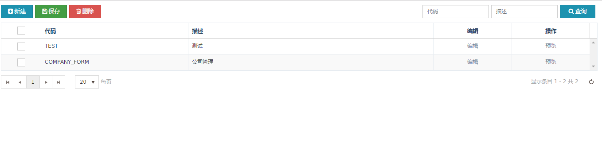
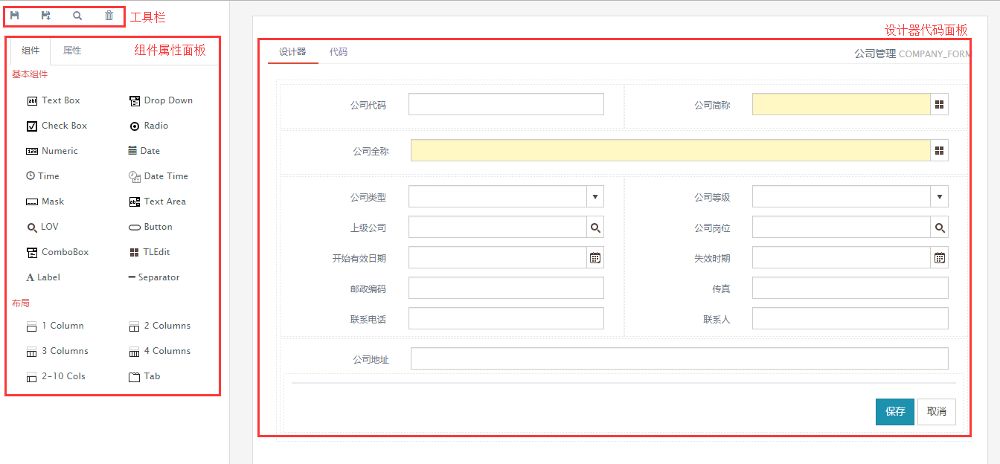
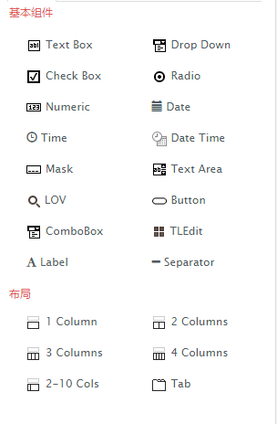
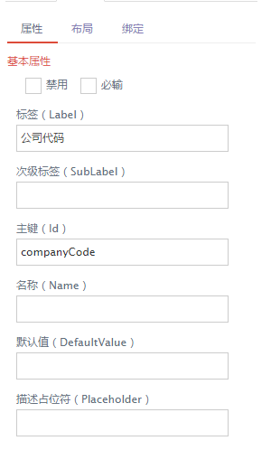
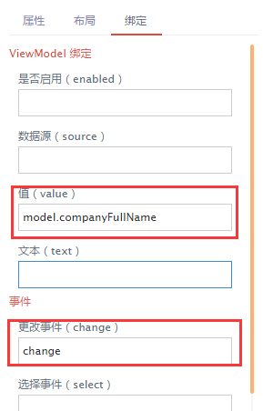
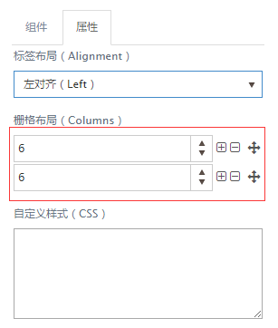
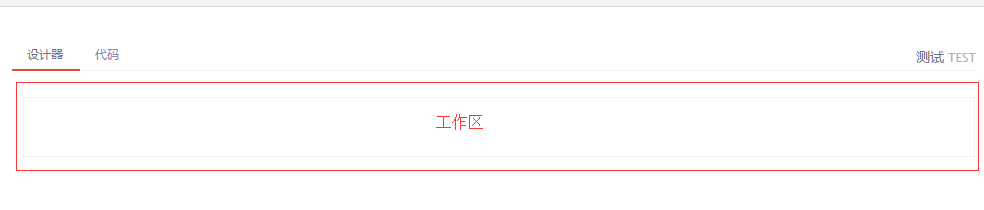
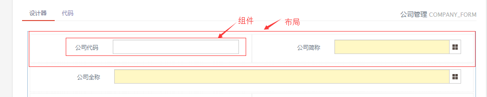
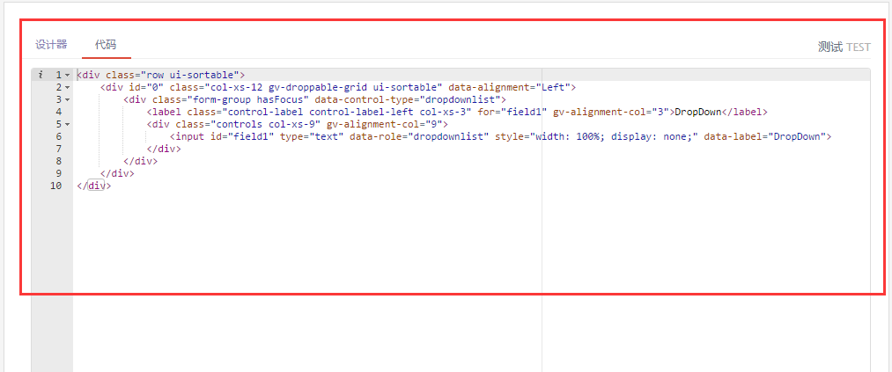

表单设计器
表单设计器是通过拖拽组件到指定位置，快速配置相应组件属性，最终返回一个完整的表单界面。
新建表单
点击新建，输入表单代码和表单描述，点击保存即可。支持批量保存和删除。
- 表单代码为必输字段,并且必须是大写代码，如果输入了小写字母，会自动转换成大写字母。

编辑表单
表单新建保存之后，会出现编辑列。点击编辑，会进入表单设计界面。如下图所示。

1.工具栏
工具栏按钮从左到右分别为保存,另存为,预览和删除按钮。
- 保存 : 保存当前表单设计器，表单代码必须存在，可根据地址栏参数code判断。
- 另存为 : 将当前表单设计器内容存为另一个表单，不会改变当前编辑的表单内容。
- 预览 : 跳转到一个新的界面展示表单内容，此时，表单可进行测试脚本。
- 删除 : 删除当前选中的组件，并不是删除表单。
2.组件属性面板
2.1 组件
如下图所示，组件分为基本组件和布局。
- 基本组件和布局均可拖拽。
- 布局拖拽到工作区后以虚线显示。

2.2 属性
属性分为组件属性和布局属性
组件属性
如下图所示，属性又分为属性，布局和绑定三类配置。
- 属性指选中组件的基本属性
- 布局可以定义label和组件的位置，组件和label的自定义样式。
- 绑定主要指viewModel的绑定。

绑定示例。如下图所示，定义绑定的值和value

代码显示为：
data-bind="value:model.companyFullName,events:{change:change}"
布局属性
如下图所示，布局属性主要可以配置栅格布局，控制布局内所有的标签和组件布局。
- 标签布局能够控制当前选中布局内所有组件的label和组件对齐方式。
- 栅格布局一共12列，可自定义分配列数。
- 自定义布局的样式，写成key:value形式。

特殊属性说明
//自定义样式CSS 内容格式如下所示
border:1px solid red;
height:30px;
3.设计器代码面板
3.1 设计器
设计器主要有工作区域，用来存放拖拽过来的布局和组件。如下图所示：
- 初始有一个默认的布局，布局呈虚线显示。

- 基本组件只能拖拽到工作区内的布局里，如下图所示。

3.2 代码
代码标签页主要为了方便用户添加动态脚本。如下图所示。
- 最好只是添加js，不去动html的结构。如要修改id，请切换到设计器标签页去修改属性。
